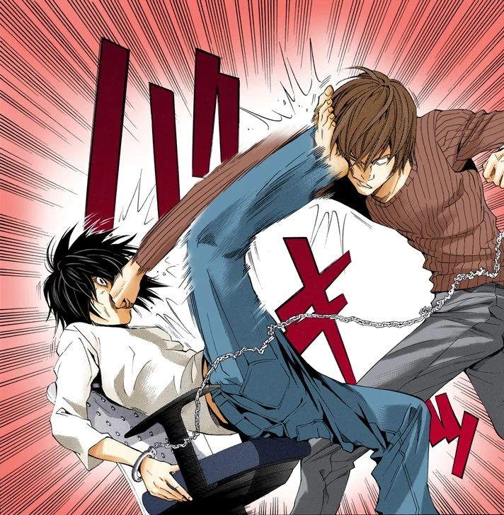

L (Lawliet)
Son adversaire princial. Détective de génie chargé d'enquêter sur Kira, L devient le plus grand rival de Light. Leur relation est marquée par un duel intellectuel où chacun tente de découvrir l'identité de l'autre.

Son adversaire princial. Détective de génie chargé d'enquêter sur Kira, L devient le plus grand rival de Light. Leur relation est marquée par un duel intellectuel où chacun tente de découvrir l'identité de l'autre.

Propriétaire originel du Death Note, Ryuk est celui qui introduit le cahier dans le monde humain. Il observe Light avec amusement et curiosité, sans véritablement lui apporter son soutien.

Admiratrice dévouée de Kira, Misa tombe amoureuse de Light et devient son alliée. Possédant elle aussi un Death Note et les yeux des Shinigamis, elle l'aide dans ses plans, même si ses sentiments ne sont pas réciproques de la même manière.

Chef de la police japonaise et homme profondément attaché à la justice, Soichiro ignore longtemps la véritable identité de son fils. Leur relation met en évidence le contraste entre leurs visions de la justice.